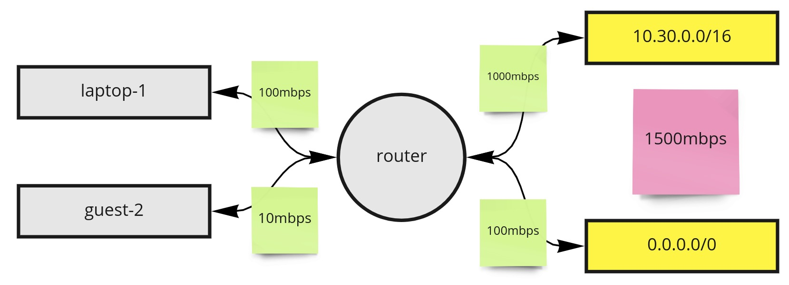
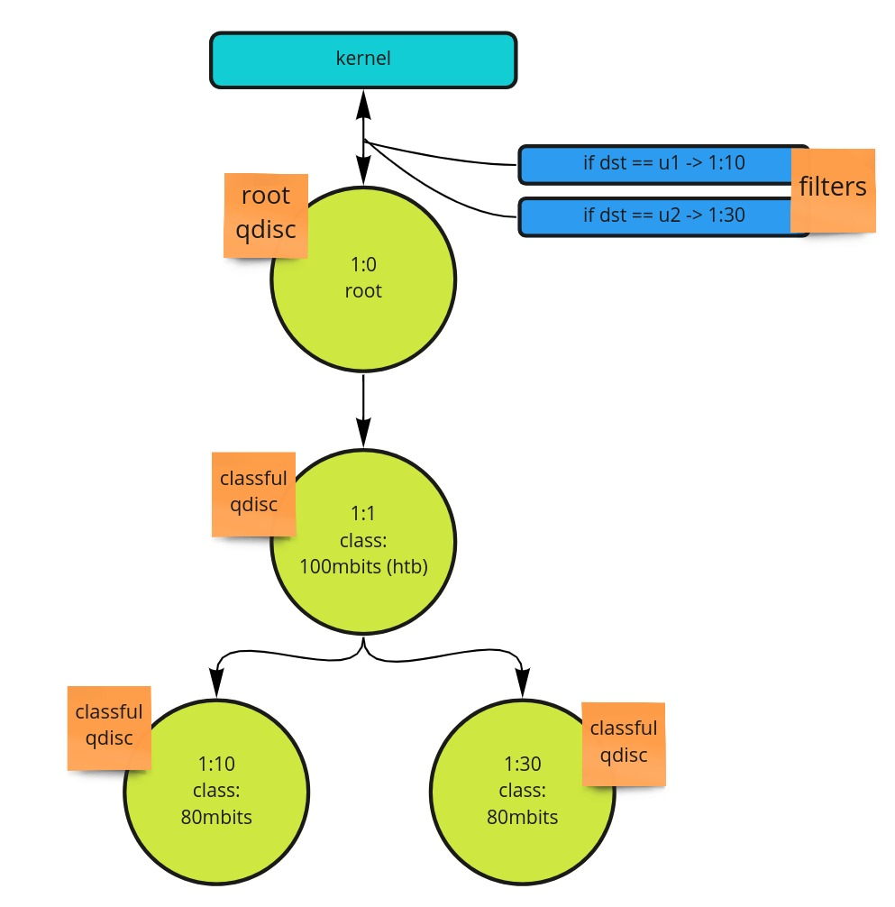

Linux Traffic Control With tc
tc enables configuring Traffic Control in a Linux host. This low-level capability can be used for use cases such as implementing quality of service controls to simulating networking scenarios that can be helpful for test cases and validations of application deployments.
As such, tc is a gem inside of Linux that is worth knowing about in your tool chain. I've used tc to solve some pretty obscure use cases. For example, needing to work around a lack of network QOS and ensuring a egress proxy never saturates specific networks based on what CIDR the destination lands in. Another is simulating packet loss to better understand how an application or server responds.
Quality of Service
To start off, we'll hone in on one use case, quality of service (QoS). You likely have seen QoS setting if you've ever setup a home network or router. Consider the following flow.
{kind=link}
Here we have 2 types of theoretical quality of service settings. To the left of the router, we can see bandwidth limitations imposed on the source device. How we identify the source device may vary, but let's assume something such as the MAC address is used. In the above, laptop-1 will be able to use up to 100mbps, while the device named guest-2 will be limited to 10mbps. On the more complicated end, to the right of the router, we can see outbound throttling happening based on CIDR ranges. In this case, we can assume there is an upper limit for all outbound traffic of 1500mbps. This can be thought of as a quota of available bandwidth owned by the "parent". The children are paths that go to the internal network 10.30.0.0/16 and all other outbound traffic 0.0.0.0/0. In this case, we may want the children to borrow as much bandwidth as is available from the parent. When under contention, we may want to ensure the route to 10.30.0.0/16 is prioritized to receive 1000mbps, even if that means throttling the traffic out to 0.0.0.0/0.
This demonstrates how these rules can get fairly complex and in this post, we'll implement parts of this model. Next, let's dive into Traffic Control itself.
Traffic Control
Traffic Control, operated via tc, enables us to implement these use cases, and many more, described in this post. There are a few key components to understand when using tc. The man pages dive deeper into these concepts, but what follows are some key points.
-
qdisc: Queueing Discipline. The kernel enqueues packets to the qdisc and subsequently tried to get as many packets as possible from this qdisc. By default, it uses a first in first out approach, which largely has no impact on traffic.
-
class: classes can be thought of as inner qdiscs that manipulate what packet might get dequeued next by the kernel. There are many class types to choose from.
-
filter: determines which classful qdisc a packet should be enqueued to. Can qualify the packet based on things like src/dst IP.
Let's now take a look at what these pieces put together might looks like.
{kind=link}
Here we can see a root qdisc, identified as 1:0. This ID is important as it enables us to define it as the parent of other qiscs. The first leaf is the classful qdisc 2:1. In this example, we're assuming it has a total bandwidth of 100mbits. The leaves under that, 1:10 and 1:30, can be considered children of 1:1 and can each transmit up to 80mbits. As children of 1:1, they will be able to borrow, from their base rate, up to 100mbits. If 1:10 and 1:30 were transmitting at full speed, we'd have 160mbits, which would exceed what can be borrowed from the parent. This is an example, where throttling between the two would occur. In that scenario, we'd expect 1:10 and 1:30's transmission rate to drop to 50mbps each. Finally, towards the top, you can see the blue filters being specified. These are essentially looking at the source IP and articulating if traffic is destine for a specific host u0 or u1, the packet will end up queued into 1:10 or 1:30.
A key concept not mentioned yet is our class choice. There are several class types that enable different behavior on how packets are handled. An example is PRIO, which enables you to setup classes that are dequeued in a specific order, creating "priority". In use case, we'll use Hierarchy Token Bucket (HTB), which enables us to achieve advanced bandwidth use cases.
Implementing Shaping
In the video accompanying this post, here is the full tc script that satisfies the diagram above.
#!/bin/bash
TC=/sbin/tc
# interface traffic will leave on
IF=ens160
# The parent limit, children can borrow from this amount of bandwidth
# based on what's available.
LIMIT=100mbit
# the rate each child should start at
START_RATE=5mbit
# the max rate each child should get to, if there is bandwidth
# to borrow from the parent.
# e.g. if parent is limited to 100mbits, both children, if transmitting at max at the same time,
# would be limited to 50mbits each.
CHILD_LIMIT=80mbit
# host 1
DST_CIDR=192.168.5.0/32
# host 2
DST_CIDR_2=192.168.5.1/32
# filter command -- add ip dst match at the end
U32="$TC filter add dev $IF protocol ip parent 1:0 prio 1 u32"
create () {
echo "== SHAPING INIT =="
# create the root qdisc
$TC qdisc add dev $IF root handle 1:0 htb \
default 30
# create the parent qdisc, children will borrow bandwidth from
$TC class add dev $IF parent 1:0 classid \
1:1 htb rate $LIMIT
# create children qdiscs; reference parent
$TC class add dev $IF parent 1:1 classid \
1:10 htb rate $START_RATE ceil $CHILD_LIMIT
$TC class add dev $IF parent 1:1 classid \
1:30 htb rate $START_RATE ceil $CHILD_LIMIT
# setup filters to ensure packets are enqueued to the correct
# child based on the dst IP of the packet
$U32 match ip dst $DST_CIDR flowid 1:10
$U32 match ip dst $DST_CIDR_2 flowid 1:30
echo "== SHAPING DONE =="
}
# run clean to ensure existing tc is not configured
clean () {
echo "== CLEAN INIT =="
$TC qdisc del dev $IF root
echo "== CLEAN DONE =="
}
clean
create
In order to test the above, you'll need 3 hosts, which I'll refer to as u0 (client), u1 (server), and u2 (server). You should update the DST_CIDR variable to the IP of u1 and the DST_CIDR_2 to the IP of u2.
Then, we'll login to u1 and u2, setting up listeners using iperf3.
arda@u1:~$ iperf3 -s -p 8080
-----------------------------------------------------------
Server listening on 8080
-----------------------------------------------------------
arda@u2:~$ iperf3 -s -p 8080
-----------------------------------------------------------
Server listening on 8080
-----------------------------------------------------------
By default, we can start transmission to the servers via our client, using a command such as the following.
# server: u2
iperf3 -c 192.168.5.1 -p 8080 -t 30 &
# server: u1
iperf3 -c 192.168.5.0 -p 8080 -t 30 &
This will run each test for 30 seconds, we can then collect logs from the client which will tell us the transmission rate.
Below is the output from u1, u2 had similar results.
-----------------------------------------------------------
Server listening on 8080
-----------------------------------------------------------
Accepted connection from 192.168.6.0, port 40136
[ 5] local 192.168.5.0 port 8080 connected to 192.168.6.0 port 40140
[ ID] Interval Transfer Bandwidth
[ 5] 0.00-1.00 sec 1.57 GBytes 13.4 Gbits/sec
[ 5] 1.00-2.00 sec 1.46 GBytes 12.5 Gbits/sec
[ 5] 2.00-3.00 sec 1.40 GBytes 12.0 Gbits/sec
[ 5] 3.00-4.00 sec 1.39 GBytes 11.9 Gbits/sec
Now let's run the above script on u0, as sudo.
arda@u0:~$ sudo ./throttle.sh
== CLEAN INIT ==
== CLEAN DONE ==
== SHAPING INIT ==
== SHAPING DONE ==
Now, we can change the script to simulate calling u1 and u2 together for 10 seconds, then only calling u2 for another 20 seconds.
# server: u2 -- called for all 30 seconds
iperf3 -c 192.168.5.1 -p 8080 -t 30 &
# server: u1 -- called for 10 out of 30 seconds
iperf3 -c 192.168.5.0 -p 8080 -t 10 &
Evaluating the logs on u1, you can see it stayed at ~50mbits for the first 10 seconds.
[ ID] Interval Transfer Bandwidth
[ 5] 0.00-1.00 sec 5.89 MBytes 49.4 Mbits/sec
[ 5] 1.00-2.00 sec 6.63 MBytes 55.6 Mbits/sec
[ 5] 2.00-3.00 sec 7.08 MBytes 59.4 Mbits/sec
[ 5] 3.00-4.00 sec 7.02 MBytes 58.9 Mbits/sec
[ 5] 4.00-5.00 sec 7.06 MBytes 59.2 Mbits/sec
[ 5] 5.00-6.00 sec 6.48 MBytes 54.4 Mbits/sec
[ 5] 6.00-7.00 sec 6.47 MBytes 54.2 Mbits/sec
[ 5] 7.00-8.00 sec 6.51 MBytes 54.6 Mbits/sec
[ 5] 8.00-9.00 sec 6.47 MBytes 54.2 Mbits/sec
[ 5] 9.00-10.00 sec 6.50 MBytes 54.6 Mbits/sec
[ 5] 10.00-10.04 sec 294 KBytes 54.4 Mbits/sec
- - - - - - - - - - - - - - - - - - - - - - - - -
Evaluating u2, we can see it stays around 50mbits for the first 10 seconds, then jumps up to 80mbits as more bandwidth became available to borrow from the parent (since transmissions to u1 stopped).
# starting at second 7
[ 5] 7.00-8.00 sec 4.90 MBytes 41.1 Mbits/sec
[ 5] 8.00-9.00 sec 4.93 MBytes 41.3 Mbits/sec
[ 5] 9.00-10.00 sec 4.89 MBytes 41.0 Mbits/sec
# second 10, when transmission to `u1` stopped!
[ 5] 10.00-11.00 sec 8.92 MBytes 74.9 Mbits/sec
[ 5] 11.00-12.00 sec 9.11 MBytes 76.4 Mbits/sec
[ 5] 12.00-13.00 sec 9.13 MBytes 76.6 Mbits/sec
[ 5] 13.00-14.00 sec 9.10 MBytes 76.4 Mbits/sec
[ 5] 14.00-15.00 sec 9.13 MBytes 76.6 Mbits/sec
[ 5] 15.00-16.00 sec 9.11 MBytes 76.4 Mbits/sec
Summary
That's it for our tc use case! Beyond this QoS example, I highly encourage you checkout the man pages for tc and if you're interested in the depth of HTB, you can get the docs via man tc-htb. Happy shaping!